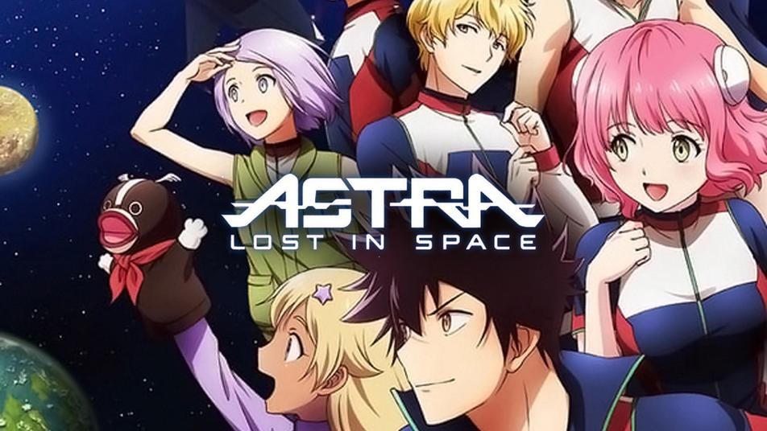
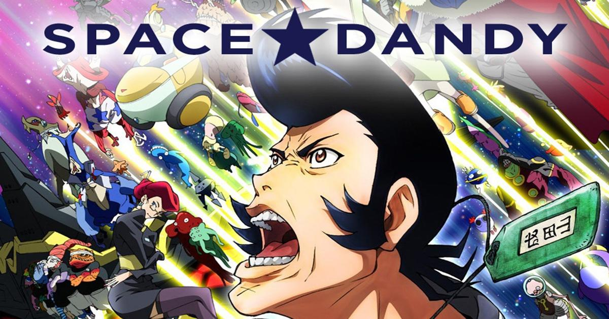
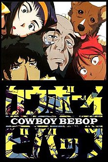

Introduction
This part of our virtual gallery will show you some of the space/sci-fi related animes that you can find. This list is not a complete one, there are many other wonderful animes that you can find have to do with space online. If you want to find any of these animes or are looking for something else to entertain you, click here!
1. Planetes - Genre: Science Fiction
In the year 2075, mankind has reached a point where journeying between Earth, the moon and the space stations is part of daily life. However, the progression of technology in space has also resulted in the problem of the space debris, which can cause excessive and even catastrophic damage to spacecrafts and equipment. This is the story of Technora's Debris Collecting section, its EVA worker, Hachirota "Hachimaki" Hoshino, and the newcomer to the group, Ai Tanabe.
2. Astra Lost in Space - Genre: Science Fiction
 n 2063, space travel has become possible and commercially viable; a group of students from Caird High School departs to the nearby planet of McPa for their Planetary Camp. Soon after the group arrives on the planet, the nine children encounter a mysterious and unforeseen intelligent sphere of light; it attacks them, transporting them into the distant depths of space. Floating in orbit around an unknown planet, they discover an old abandoned spacecraft nearby. Finding it in working order, they resolve to use the ship to return home. To do so, they must cross the 5,012-light-year gulf of space separating them from home by visiting alien planets harboring life to replenish and manage their limited resources.
3. Space Dandy - Genre: Comedy, Space Opera
 Dandy is a groovy, pompadour-wearing man who explores the stars in search of strange aliens for money, desiring to visit his favorite place: bo****s, the best diner in all the cosmos. Traversing the galaxies in his trusty ship, the Aloha Oe, Dandy is accompanied by his two equally unique friends: QT, the vacuum cleaner robot, and Meow, an alien with a cat-like appearance.
4. Kakumeiki Valvrave - Genre: Mecha, Science Fiction
True Calendar year 71-a new age where 70% of the human population lives in space thanks to the development of "Dyson Sphere", a city in space. The world is divided into two main powers: The Dorssia Military Pact Federation, a power which grew out of a military alliance, and the Atlantic Rim United States (ARUS), which grew in power as it expanded its trade agreements. The minor nation of JIOR has declared neutrality between these two forces and maintains its peace through economic prosperity. Within the JIOR's Sphere, Haruto Tokishima lived an ordinary life as a high school student in the division known as "Module 77" that is - until the Dorssian military begins their sudden invasion.
5. Cowboy Bebop - Genre: Neo-noir, Space Western
 Mankind has colonised the stars, yet humanity remains the same desperate and power-hungry species in 2071. A ragtag duo of spacefaring bounty-hunters, Spike Spiegel and Jet Black, struggle to make ends meet living amongst the stars; and things are about to get a hell of a lot more complicated when they adopt the super-dog Ein, persuade the seductive femme-fatale known as Faye Valentine, and the teenage-hacker Edward. These five figures are about to come across things crazier than the crew of the Bebop itself.